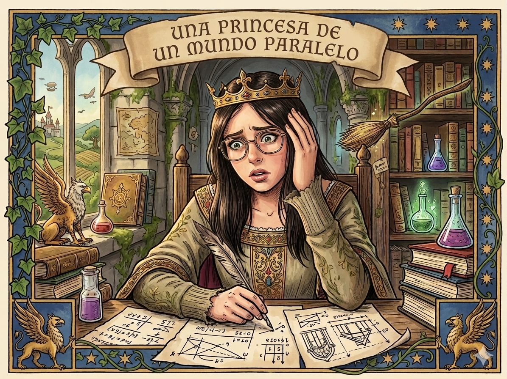
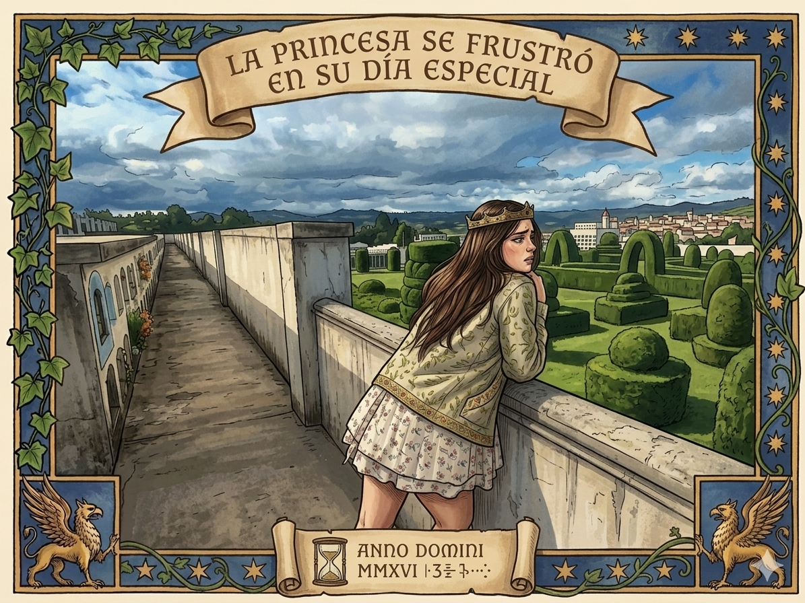
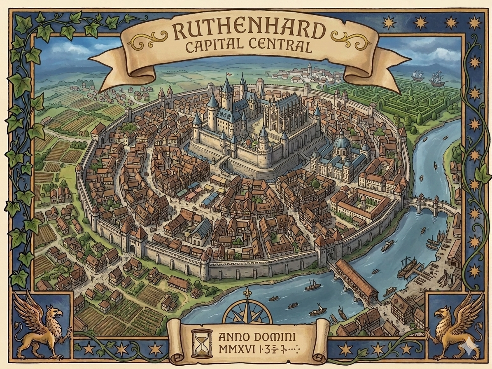
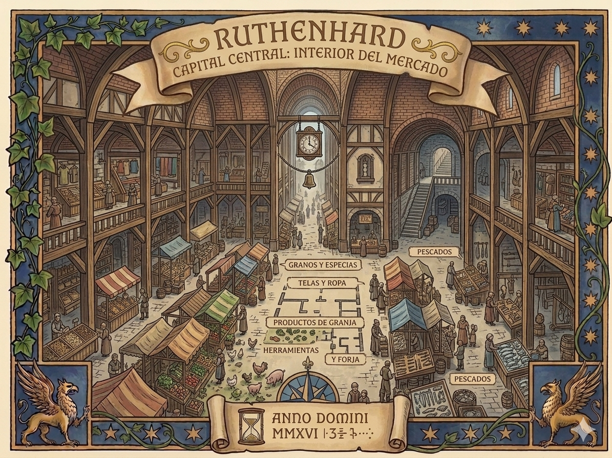
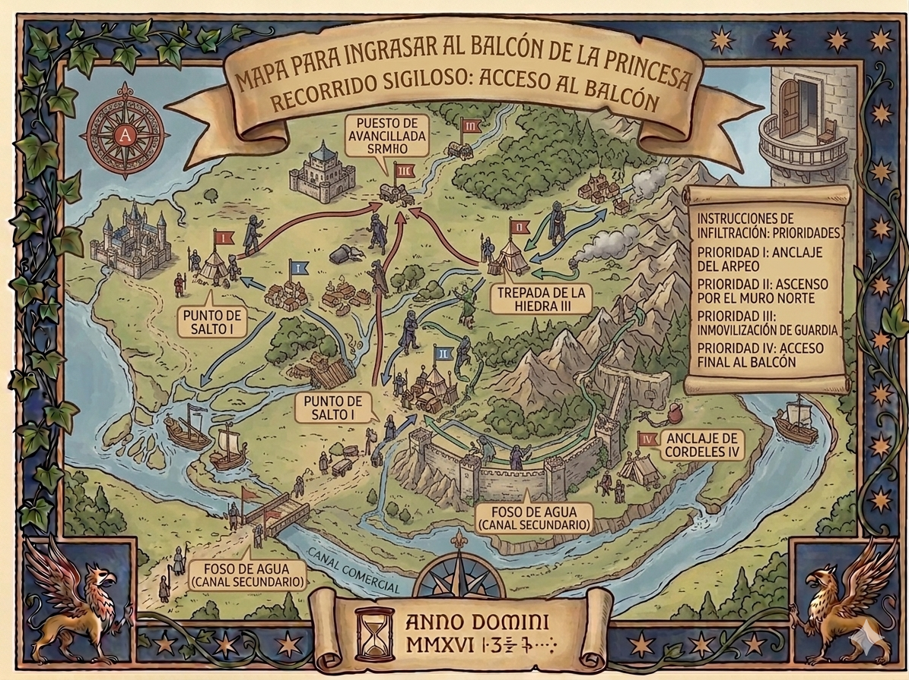
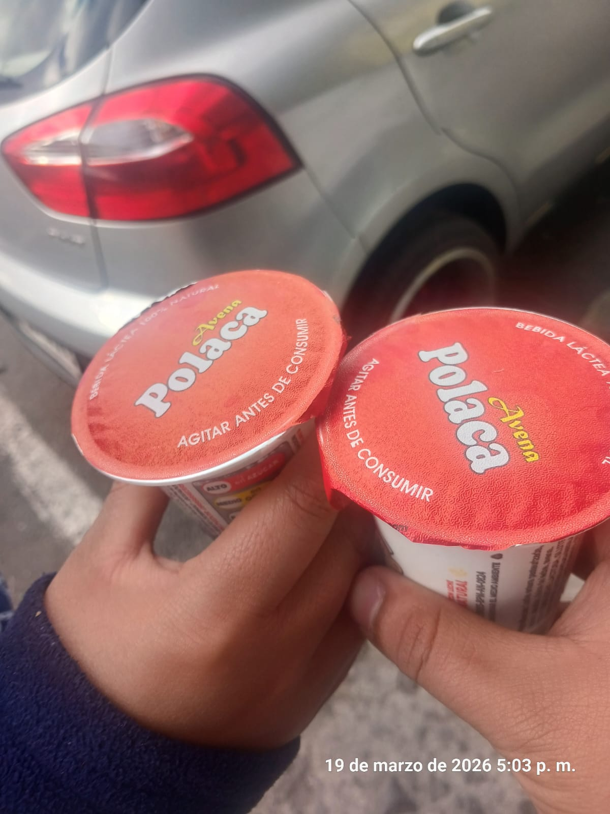
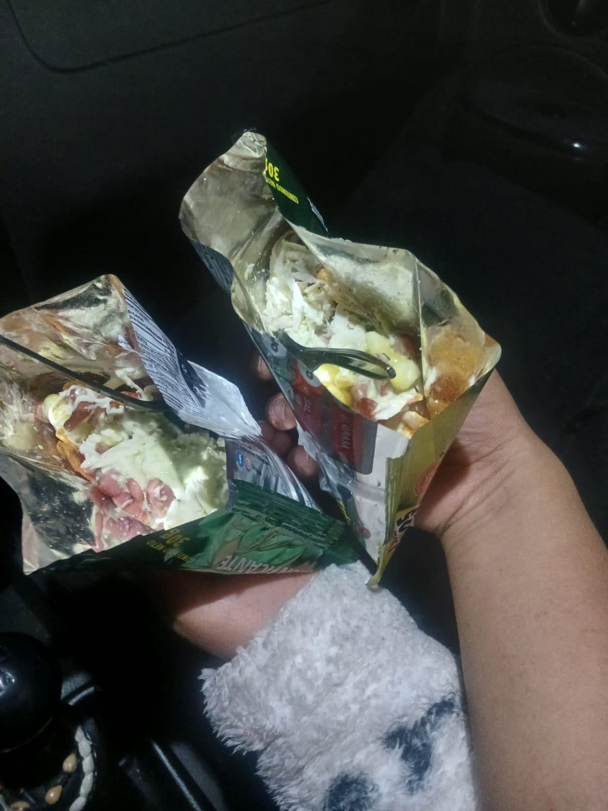
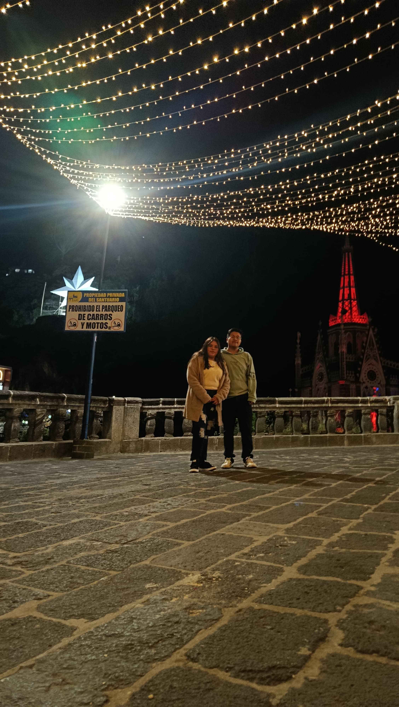
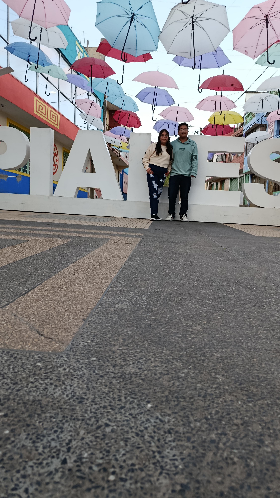
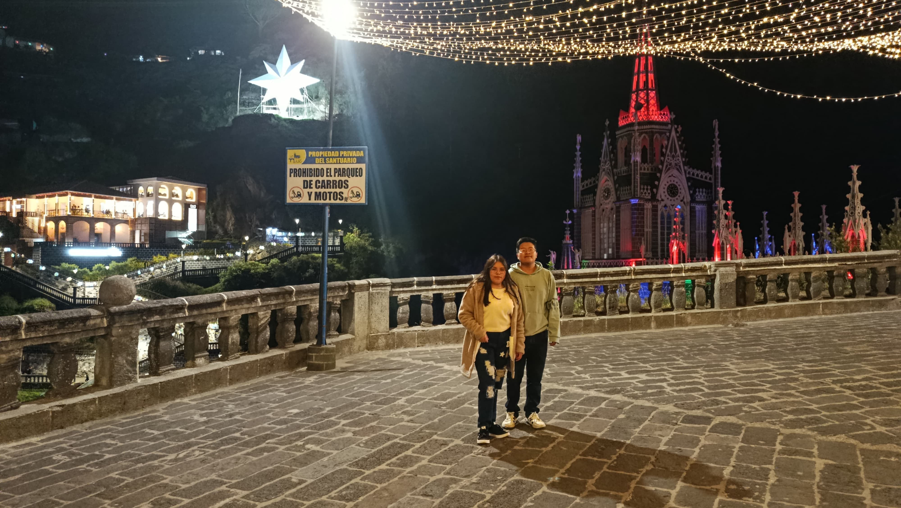

En el planeta Tierra, vivía una princesa en un mundo mágico al estilo de Harry Potter pero mejor, una princesa cuyo nombre era percibido por los Griegos como la "coronada", ¿Qué? ¿Aún no sabes su nombre? Bueno, su nombre era Estefanía Pinchao, era fuerte, audaz, decidida de si misma, y sobre todo, era hermosa cualquier persona que la miraba quedaba pasmado de asombro al verla. Pero hubo un día donde la princesa se encontraba en problemas, problemas Demasiado Grandes, y claro; su cabecita no podía procesarlo y quedó estancada sin poder solucionarlo...

La aldea en donde vivía con sus hermanas y su madre, incluso sus abuelitos, todos estaban tan preocupados que no sabian como podrían ayudarla, pero ¿porqué tanto misterio? ¿qué es lo que no puede resolver la princesa? ¿qué es lo que la tiene tan angustiada?, pues precisamente era que no sabia que día era, y lo que ella no sabía era que justamente hoy era su cumpleaños y todos a su alrededor lo sabían, pero no querían arruinarle o decirle, ya que al decirle le arruinarían la sorpresa que habían hecho para ella. y al no saber la princesa porque este día era tan importantes para todos, ella no podía comprenderlo de la misma manera, entonces se frutró y se fue al balcón de su castillo por horas.

En el otro extremo de la región, existía un chico que trabajaba en el campo labrando junto a su familia, como era una región de frío en su mayoria se dedicaba al cultivo de papas y cría de conejos, bueno; resulta que un día este joven campesino tuvo que ir al centro de la región; lugar donde se encontraba el mercado central, y aquí era el punto de venta de artículos como ropa, comida, gemas, joyas e incluso armas. Pues bien, este muchacho tenía que ir allí a vender sus productos, durante su viaje debía de cruzar por montañas y relieves super grandes, lo cual pues tomaría días. Pero este viaje no solo era para vender sus productos, sino también para ir a dar una flor super legendaria a la princesa, como muestra de amor hacia ella y al mismo tiempo declararle su amor sincero.

Finalmente el joven acabó su travesía que le había llevado casi una semana para poder llegar a la capital central, una vez que llegó al sitio decidió vender sus productos y posterior a ello, poder darle el regalo que llevó durante días en su mochila, y por increíble que parezca, la flor aún estaba intacta, como si sus raíces aun estuvieran en la tierra plantadas sobre la húmeda tierra fértil una vez plantada.

Al acabar de vender en el mercado, cayó la noche, y junto a las estrellas que lo acompañaban decidió visitar a la princesa en su castillo, pero había un pequeño detalle, por no decir que era tan grande que solo tenía una oportunidad, era escabullirse al balcón de la habitación de la princesa sin ser visto por los guardias ya que de ser visto, sería ejecutado y no cumpliría con su misión. Decidido el joven, realizó un plan y le resultaría fácil posteriormente ya que debido a que la princesa estaba frustrada en ese momento, todos estaban dentro del castillo ideando un plan para que la princesa se mejorara y más aún en su cumpleaños.
Una vez ingresado al castillo, miró a lo lejos a la princesa llorando en su balcón, el joven decidió ir a donde ella estaba sin que los guardias lo encontraran, una vez en el bastión procedió a subir por la torre más alta para poder llegar finalmente a donde estaba Estefanía. Llegó el momento...solo ella y él joven, y aquí empezaron a hablar:
Estefanía, hola soy Aldair, el joven campesino, viaje durante montañas y ríos para poder decirte esto, desde el primer día en que te conocí me enamoré a primera vista de tí, tu cabello, tu piel, tus ojos, tu forma de ser, me encanta tus bromas, tus sueños, cuando hablas de cualqueir cosa, me gusta cuando te emocionas por pequeñas cosas, me encanta cuando sonríes, cuando estas conmigo en toda forma, me encanta todo de tí, disfruto la compañía que me brindas, todo lo que has hecho por mí, los regalos, las salidas, las citas, me enamoré de tí porque sé que eres y descubrí que eres una persona, una chica y una niña muy especial, de esas que solo existen en los cuentos de hadas, por eso, este cuento es para tí, porque eres mi mundo entero, mi niña y mi princesita hermosa que amo y no hay día que no deje de enamorarme de esa chica que está conmigo. Y BIEN, TE DESEO UN CUMPLEAÑOS FELIZ PARA TÍ, MI PRINCESITA DE LOS CUENTOS, ESTEFANÍA TE AMO MUCHO Y ESPERO HAYAS DISFRUTADO ESTE CUENTO.




